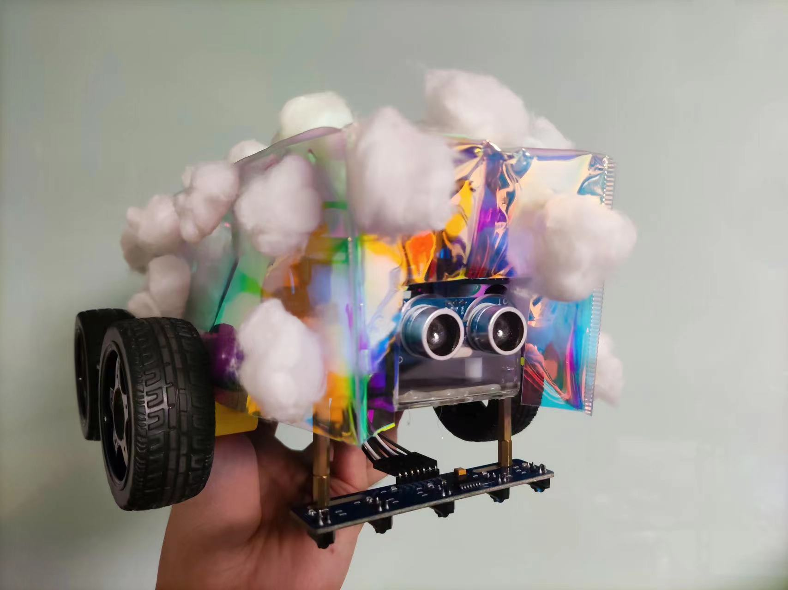

Project introduction
Using Verilog language, we implemented obstacle avoidance and line-following functionalities for a robot. We constructed the robot body using an FPGA circuit board and ultrasonic ranging modules, and designed an outer shell for the robot. In the end, we achieved the robot’s ability to travel along a path, sound an alarm when encountering obstacles, and perform steering and detours.
Hardware programming
In this task, we need to code the control module, drive module, and ultrasonic sensor module for the car using the Verilog language. Simultaneously, we utilized the Multisim hardware simulation software to establish connections between modules and conducted simulation experiments. Ultimately, we succeeded in enabling the car to autonomously perform line following and obstacle avoidance functions under battery power.
Design
Our course not only requires the implementation of specified functionalities but also demands the design of the vehicle’s appearance. My teammate and I used laser-cut bags to encase the chassis, preventing the internal circuit boards and wires from being exposed. We also used cotton to adorn both the interior and exterior of the shell, achieving the dual purpose of filling the interior and decorating the exterior. Through this design, we aimed to embody a fusion of modern and traditional elements, as well as a blend of sharpness and softness. We ultimately named it the “Rainbow Cotton Explorer”!
About this Post
This post is written by Jason, licensed under undefined.